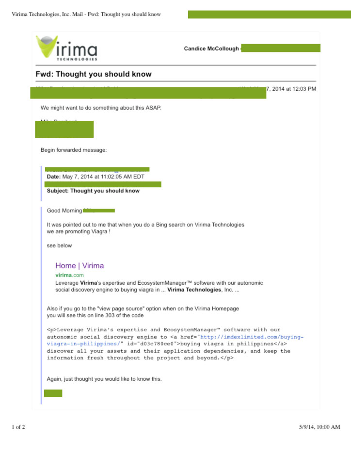

At lunch on Wednesday May 7th, 2014 I got an email from a co-worker, forwarded from a consultant, about an anomaly on the bing search results for Virima.com
I ran the site through Sucuri’s online scanner which showed that 3 pages of Virima and 2 pages of Ecosystemmgr, (another company website, kept on the same server) had SEO spam on them. This is where an intruder will upload a link(s) to their site on yours in order to boost their SEO. I noticed a couple of things about the spam:
I began with virima because it was the most curious. A few explainations for the spam’s behavior:
This is likely because bing had crawled the site since the spam had been uploaded and google hadn’t. If we hadn’t noticed it, then the next time google crawled the site, it would be noticed by google.
This also means that the bing results with the spam will continue to show until bing crawls the site again and refreshes its information on us.
This was the most insidious part of the spam. It means the intruder had access to the server to either edit the page template files, or directly added the link to the database cell associated with this post.
Test:
To test this, I made a small change to the affected page on virima, and updated the post. This creates a new entry in the database associated with this post/page revision and wouldn’t be pulling the data from the altered database cell anymore.
Result:
The spam still appeared exactly as it did before. This nulled my hypothosis, but also showed that I was viewing the page I thought I was, and there wasn’t any kind of redirection to a copy-cat page because I could see my small change as part of this new updated page.
However, I still opened up my backup of the database and located the entry in question, and it was exactly as it was showing in the CMS. No link inserted, just a paragraph about ecosystem manager and database management. So, I concluded the database was not where the problem was located.
Test:
So, we needed to find the difference between virima’s wordpress installation, and a fresh one of the same version, 3.9. Hashed all the files in the attacked copy of virima, and hashed all the files in the fresh copy of wordpress, and compared them looking for differences. Expected to find a couple changes into the theme folder, where I’ve made a couple benign changes and added a favicon.ico file. However, more changes were found. One of the index.php files was different (wordpress includes an index.php in every directory as a security feature, they are all the same:
<?php
// Silence is golden.
?>
The one that was different had the ending ?> missing. Which isn’t a issue because it isnt needed if theres no other language (like HTML) being written in the same file. So this was just a case of a word press developer being lazy, and wasn’t the source of the problem.
grep brought up a couple much more interesting differences in a couple files in the wp-includes directory. The first was post-template.php and the second was rss-info.php. The post-template.php file had a couple lines difference, and the rss-info.php file wasn’t present in the clean copy of wordpress 3.9 at all. Jackpot.
So, I open up the rss-info.php file in TextWrangler and I find this (truncated):
<?php $GLOBALS['_1120902887_']=Array(base64_decode('' .'ZXJyb3JfcmVwb3J0' .'aW5' .'n'),
base64_decode('aW5pX3Nld' .'A=='),
base64_decode('c' .'3' .'R' .'yc' .'G9z'),
I’m not an expert in malware, but I know anything trying to hide the code with a bajillion variables is bad news. I still have the original file. Its mostly just a long list of variables and then a couple of huge functions to unravel them into basically an echo that puts “buy viagra here: and a random choice of an array of pharma sites.
So I deleted that file off the server and checked the site. Spam gone. Removed the root of the problem
Then I opened up the altered post-template.php file and starting on line 212 found this:
$content = apply_filters( 'the_content', $content );
$content = str_replace( ']]>', ']]>', $content );
@include_once("rss-info.php");
echo $content;
The clean version of this file only contains:
$content = apply_filters( 'the_content', $content ); $content = str_replace( ']]>', ']]>', $content ); echo $content;
Sneaky.
So I reinstalled a fresh wordpress 3.9 and it overwrote everything the hacker-bot had changed. Arguably, I could have just done that at the beginning, but it was a good learning exercise.
I assumed the problem was the same and just re-installed a fresh wordpress and fresh copies of the plugins. Then checked the site. The spam was still present. Well, now what?
I start poking around the dashboard of ecosystemmgr, and find an anauthorized user. Bingo. Finally had compelling evidence to show restricting user privileges, removing redundant accounts, and stregthening passwords is a good idea, and was able to get permission to implement strengthened security. Removed the unauthorized user, and checked a back-up for a backdoor added to our functions.php file (as the wordpress had already been fresh installed and the could-have-been compromised functions.php file overwritten), didn't find one. Good. Then I went to the edit page interface of the effected webpage, and there the links were, simply pasted into the page content. Easy fix. Hopefully with the increased security measures it won't become a recurring problem.
I contacted the company that manages our hosting, so they could contact the hosting company and ask for the access logs to the site. I get the ftp logs back, and am told the raw access logs are not recorded.
I do get to look in the ftp logs though. In them, I find where the rss-info.php was upladed and the post-template.php was overwritten, about two weeks previously. In Ecosystemmgr, I can't pinpoint a time period, because they accessed the site directly throught the wp dashboard, not throught ftp. And I can't have the access logs.
The crisis was successfully averted, and quickly enough that our site was never blacklisted for malware. It was a good day.
Previous Project Back to Professional Work Next Project